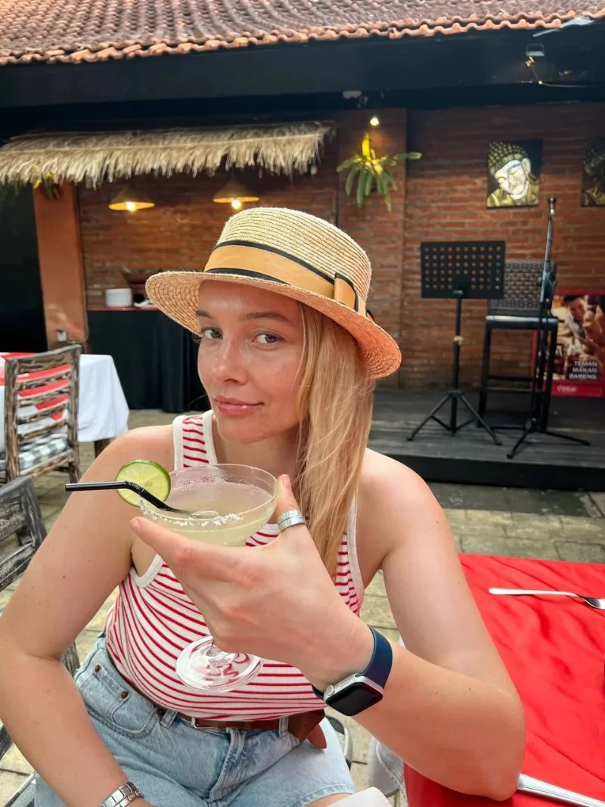

Готовый путеводитель
Маршруты, пляжи, транспорт и детали, которые пригодятся до поездки. Выбирайте и путешествуйте в своём ритме.
Смотреть путеводителиВыбирайте готовый путеводитель или расскажите мне о своих планах. Помогу разобраться с направлением, пляжами, отелями и маршрутом — с учётом ваших пожеланий.

Планируйте самостоятельно или доверьте детали мне.
Маршруты, пляжи, транспорт и детали, которые пригодятся до поездки. Выбирайте и путешествуйте в своём ритме.
Смотреть путеводители
Расскажите, какой отдых вам хочется. Я составлю план с учётом ваших дат, интересов и темпа путешествия.
Заказать маршрут
Помогу выбрать направление, курорт и отель с учётом важных для вас деталей — от пляжа до перелёта.
Подобрать турЯ побывала на Фукуоке, в Нячанге и Дананге. У каждого места свой характер. Выберите, какое путешествие хочется исследовать.

Остров, пляжи и разные районы. Разберёмся, где остановиться и как спланировать дни.
Открыть Фукуок
Море, прогулки и жизнь курортного города. Выберите подходящий район и ритм отдыха.
Открыть Нячанг.webp)
.webp)
Я Юлия Горбачёва, турагент с 2008 года. Помогаю выбирать место для отдыха и заранее разбираться в деталях поездки.
Рассказываю, какой пляж выбрать, где удобнее жить и сколько времени займёт дорога. Делюсь опытом своих поездок и маршрутами, которые можно повторить.
Узнать обо мне18 лет в туризме · Личный опыт · Маршруты и гайды
Большой путеводитель — для всей поездки. Короткие маршруты — для отдельных дней.

Поможет выбрать район и пляж, продумать дни и подготовиться к самостоятельной поездке.
Когда хочется заранее понять маршрут и не тратить время на месте.
.webp) МИНИ-ГАЙД · PDF
МИНИ-ГАЙД · PDF.webp) МИНИ-ГАЙД · PDF
МИНИ-ГАЙД · PDFЧек-лист для первой поездки и материалы о Фукуоке — чтобы разобраться с первыми шагами.
.webp) ЧЕК-ЛИСТ · PDF
ЧЕК-ЛИСТ · PDFОдин лист с важными делами до вылета: документы, связь и подготовка к поездке.
Скачать чек-лист.webp) МИНИ-ГАЙД · PDF
МИНИ-ГАЙД · PDFПервые шаги планирования: районы, пляжи и вопросы, которые стоит решить заранее.
Открыть мини-гайд.webp) СТАТЬЯ
СТАТЬЯЧем отличаются два варианта отдыха и что проверить, прежде чем выбрать жильё.
Читать статьюРазбираю отели и направления, делюсь наблюдениями из поездок и полезными деталями.
ФУКУОК · ОТЕЛИ
Что проверить кроме красивых фотографий и цены.
Читать статью.webp)
ФУКУОК · С ДЕТЬМИ
Как выбрать место для отдыха и распределить дни.
Читать статью
ПОЛЕЗНЫЕ СОВЕТЫ
Пляж, дорога, окружение и важные нюансы номера.
Читать статьюСобрала ответы на вопросы, которые чаще всего возникают перед поездкой: про сезон, выбор курорта, документы, отдых с детьми и подготовку к путешествию.
Это зависит от направления и формата отдыха. Для пляжного отпуска, семейной поездки или знакомства со страной лучше ориентироваться на сезонность конкретного региона. Я помогаю подобрать направление с учётом времени поездки и ваших ожиданий.
Фукуок подойдёт тем, кто хочет более спокойный островной отдых, пляжи и размеренный ритм. Нячанг — тем, кому важны городская инфраструктура, прогулки, кафе и активность. Выбор зависит от вашего формата отпуска.
Условия въезда зависят от гражданства, длительности поездки и актуальных правил на момент путешествия. Перед поездкой лучше проверить свежие требования, а при необходимости я подскажу, на что обратить внимание при подготовке.
Да, во Вьетнам часто едут семьями. Важно заранее выбрать удобный курорт, спокойный пляж, подходящий отель и понятную логистику. В материалах и консультациях я помогаю учесть такие детали заранее.
Лучше заранее подготовить документы, страховку, базовую аптечку, средства от солнца и продумать мелочи вроде связи и оплаты. Для этого на сайте есть полезные материалы и чек-листы.
Да, если нужен более индивидуальный формат, можно запросить помощь в подборе маршрута с учётом ваших интересов, состава семьи и продолжительности поездки.
Слова людей, которым я помогла с выбором и организацией отдыха.
.png)
Подборка отелей на уровне, посещение достопримечательностей, обеспечение трансфером и сама поездка была продумана до мелочей.
Древние достопримечательности подарили с первого взгляда невероятный восторг и ощущение прикосновения к истории.
Добрый вечер! Прекрасно впечатление от путешествия осталось у нас! С самого начала путешествия всё прошло прекрасно и распланировано: подборка отелей на уровне, посещение достопримечательностей, обеспечение трансфером и сама поездка была продумана до мелочей. Древние достопримечательности подарили с первого взгляда невероятный восторг и ощущение прикосновения к истории. Отдельно хочется отметить атмосферу: кошки на улицах Стамбула, медузы на морской глади, жаренные каштаны и кукуруза, пешие прогулки позволили по-настоящему расслабиться. Осталось только самое приятное впечатление от всего тура. Огромное спасибо за Вашу поддержку, Юлия, — вы помогли сделать наш отдых безупречным!
Ты всегда на связи, это очень важно для туристов.
Огромное спасибо тебе за нашу поездку, ты наш проводник к нашим мечтам!
Юля привет, хочу от души поблагодарить за поездку во Вьетнам которую ты нам организовала, во первых удачно куплен был тур среди многих вариантов именно ты посоветовала нам отель такой какой нам был нужен и ожидания полностью оправдались с реальностью, во вторых подробно рассказала про Вьетнам, что с собой взять, какие нюансы в аэропорту, на все мои вопросы ты всегда отвечаешь, советуешь как лучше, также во время тура ты всегда на связи, это очень важно для туристов, таких как я со многими вопросами и волнениями, поэтому огромное спасибо тебе за нашу поездку, ты наш проводник к нашим мечтам!☺️😍😍😍 обязательно поедем ещё и обратимся конечно к тебе как самому надёжному турагенту!👍👍👍
Море восхитительное, очень теплое.
Из него не хотелось выходить 😁. Понравился отель: красивый, современный.
Здравствуйте, Юля! Спасибо за организацию нашего отдыха🌺. Мы прекрасно отдохнули. Море восхитительное, очень теплое. Из него не хотелось выходить 😁. Понравился отель: красивый, современный. Персонал вежливый, уборка и смена белья каждый день. Завтрак шведский стол, тоже порадовал. Еда разнообразная, мне больше понравились вафли и панкейки с шоколадом😂, ела каждый день. Были на обзорной экскурсии по Нячангу, ездили в Далат. Стеклянный мост и спуск на электросанях к водопаду это 💣. Посетили остров обезьян и орхидей. Хоть сезон цветения орхидей прошёл, но само по себе место красивое, покупались там в море. Ездили на остров развлечений. За один день конечно все не посмотришь. Время пролетело очень быстро.
Автобусом нас и других туристов летевших с нами одним рейсом, доставили в аэропорт. Подробно рассказали наши действия, куда идти. Рейс задержался, но по времени прилетели раньше.